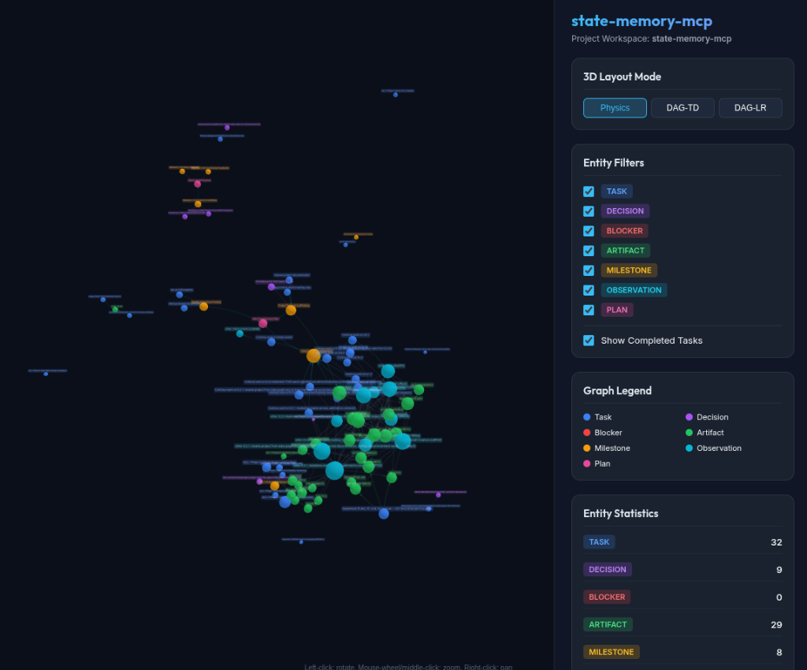

State Memory MCP
A zero-infrastructure, deterministic workflow state graph server for AI agents. Track tasks, design decisions, session histories, and blockers locally to supercharge agent context and eliminate memory bloat.

state-memory-mcp view
💡 Why State Memory MCP?
Offload your development state from the agent's chat history into a structured, high-performance local database.
🧠 Cognitive Externalization
Separates intrinsic task complexity from presentation clutter. Relocates state to SQLite, turning recall into simple recognition.
🚀 Faster Agent Executions
Eliminates expensive search loops. Reduces end-to-end execution latency by 67% to 74% in multi-agent workflows.
📉 Massive Token Savings
Keeps history in SQLite. Reduces API usage costs by 128× to 462× when utilizing compiled trajectory models.
🎯 Higher Response Quality
Provides a branch-aware, single source of truth for architectural decisions. Prevents agent hallucinations and redundant work.
🔒 First-Hop Determinism
Graph queries use deterministic SQL, not probabilistic vector search, avoiding cascading hallucination loops.
🔗 Simplified Relationships
Defines precise task, decision, and blocker relationships with automatic cycle rejection to guarantee a clean graph structure.
🤝 Multi-Agent Blackboard
Limits central LLM invocations to O(1) instead of O(N) by letting parallel subagents update and sync state directly on SQLite.
📈 Compounding Flywheel
Accumulating decisions and historical tasks builds deep project context. Future agents onboard faster and avoid repeating past design pitfalls.
📊 Workflow Value & ROI Estimator
Lays out the ballpark value, tokens saved, and developer time recovered by persisting project workflow state graphs.
🧱 Anatomy of the Workflow State Memory
A strongly-typed, SQLite-backed vocabulary designed to represent software development states.
📋 Nodes (Entity Types)
The 7 nodes that structure your workspace context:
- Task: Active developer TODOs and checklist checkpoints.
- Decision: Architectural choices, trade-offs, and design rationale.
- Artifact: Output files, packages, database schemas, and configs.
- Plan: Multi-phase roadmaps and feature implementation specifications.
- Blocker: Active bugs or missing dependencies stalling progress.
- Milestone: Groups of related tasks representing progress stages.
- Observation: General discoveries, runtime behaviors, and notes.
🔗 Edges (Relationship Mappings)
Connects workflow nodes via explicit semantic relationships:
- depends_on: Direct node-to-node dependency.
- blocks / produces: Declares blockers or generated files.
- references / updates: Relates code/docs or replaces decisions.
- contradicts: Flags conflicting decisions or code states.
- part_of / child_of: Hierarchical plan and milestone nesting.
- implements / decided_in: Links tasks to specifications or decisions.
🧠 Advanced Graph Analytics
Empowers agents to perform complex, automated analysis over your workspace state.
🧭 Critical Path Analysis
Finds the exact chain of uncompleted, blocking tasks delaying a milestone so agents can prioritize resolving them.
💥 Blast Radius Analysis
Calculates the downstream impact of changing an artifact, task, or architectural decision before editing code.
🔍 Contradiction Audits
Scans the database for anomalies, such as completed tasks with active blockers or contradicting accepted decisions.
🗺️ Decision Trails
Traces the historical lineage of updates and contradictions to reconstruct the "why" behind old design choices.
⚡ Research-Backed Performance
State-graph-driven Model Context Protocol architectures yield massive, measured improvements in production environments.
Latency Reduction
Direct server-to-server updates bypass latency-inducing round-trips to the central model.
Cost Savings
Using trajectory event logs to compile procedures into smaller, local models lowers API usage costs.
Central Model Invocations
Limits central planner calls to just start (Plan) and end (Summarize), preventing context decay.
* Heuristics and benchmarks sourced from academic studies of stateful context store protocols.
🛠️ Core Features
A zero-infrastructure, deterministic framework built for AI coding assistants.
⛓️ Deterministic Logic
No LLM hallucination in data retrieval. Every node CRUD operation, cycle check, and lookup is written in plain SQL/JavaScript.
🛡️ Path & SQL Sanitization
Strict path resolve guards prevent file access escaping the workspace, and regex filters block administrative SQLite queries.
🌲 Git Branch Awareness
Dynamically isolates node tasks and planning logs depending on the checked out git branch, preventing main branch noise.
🕶️ 3D WebGL Visualization
Instantly launch interactive 360-degree dark mode force-directed graphs in your default web browser to inspect node links visually.
📜 Event Audit Trail
Every node/edge change is logged to an append-only events table with before/after state snapshots and chronological node history.
🔐 Session Identity
Track sessions with agent identity and custom metadata to verify provenance and see who performed what change when.
🔌 Full MCP Specification Compliance
Equipped with complete spec features including annotations, resources, and custom prompts.
📁 Exposed Graph Resources
Provides read-only contexts using RFC 6570
templates under the state-memory:/// URI scheme:
-
state-memory:///{project}/summary
Project state counts, task breakdowns, progress rates, and recent decisions.
-
state-memory:///{project}/blockers
Lists active blockers and what transitively blocked tasks they stall.
-
state-memory:///{project}/decisions
Logs accepted decisions and updates histories.
-
state-memory:///{project}/events
Lists recent project events and state-transition mutation ledger.
-
state-memory:///{project}/sessions
Lists active and past sessions with executing agent identities.
💬 Reusable Prompts
Template instructions that automatically fetch state data to bootstrap workflows:
-
session-start
Bootstraps your coding agent with current project summary, blockers list, and immediate pending tasks.
-
plan-feature
Guides feature development scaffolding, milestone breakdowns, and design RFC decisions.
-
triage-blockers
Guides triaging active blockers and resolving critical path dependency chains.
📚 Architecture & Reference Documentation
In-depth technical guides for database schemas, local storage layout, and programmatic library usage.
🗄️ Database Schema Reference
Complete SQL schema definitions for nodes, edges, events, sessions, snapshots, and FTS5 triggers.
📁 Local Storage Architecture
Directory hierarchy for .state-memory-mcp/, global storage fallback, permissions (`0o700`/`0o600`), and path validation security.
📦 Programmatic Library API
Exported TypeScript library module (@putervision/state-memory-mcp/lib) for embedding engines directly in Node.js applications.
⚙️ Client & IDE Integrations
Zero manual effort: state-memory-mcp init automatically scaffolds config files for all supported IDEs.
⚡ Recommended: 1-Step Auto-Scaffolding
Run state-memory-mcp init inside your repository. It automatically generates and updates configuration files across all your installed agent environments, including workspace agent rules (.agents/AGENTS.md) and skill documentation (.agents/skills/state-memory-mcp/SKILL.md).
👽 Google Antigravity
Global: ~/.gemini/config/mcp_config.json
Workspace: .agents/settings.json
{
"mcpServers": {
"state-memory-mcp": {
"command": "state-memory-mcp",
"args": ["run"]
}
}
}
🤖 Claude Code & Desktop
One-line CLI: claude mcp add state-memory-mcp -- npx -y @putervision/state-memory-mcp run
Desktop config: claude_desktop_config.json
{
"mcpServers": {
"state-memory-mcp": {
"command": "npx",
"args": ["-y", "@putervision/state-memory-mcp", "run"]
}
}
}
🪄 Cursor & VS Code
Cursor: .cursor/mcp.json
VS Code: .vscode/mcp.json
{
"mcpServers": {
"state-memory-mcp": {
"command": "state-memory-mcp",
"args": ["run"],
"env": {
"STATE_MEMORY_MCP_PROJECT": "my-project"
}
}
}
}
🌊 Windsurf & Roo / Cline
Windsurf: .windsurf/mcp.json or ~/.codeium/windsurf/mcp_config.json
Roo Code / Cline: .cline/mcp.json
{
"mcpServers": {
"state-memory-mcp": {
"command": "state-memory-mcp",
"args": ["run"]
}
}
}
🚀 Quickstart
Get state-memory-mcp configured globally in 10 seconds.